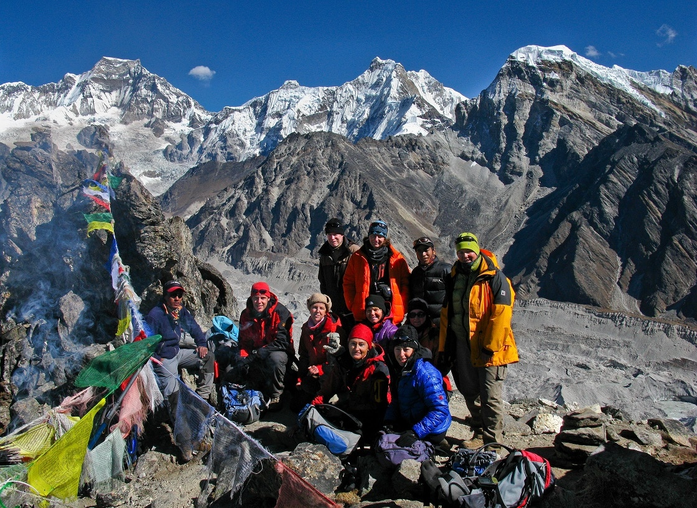
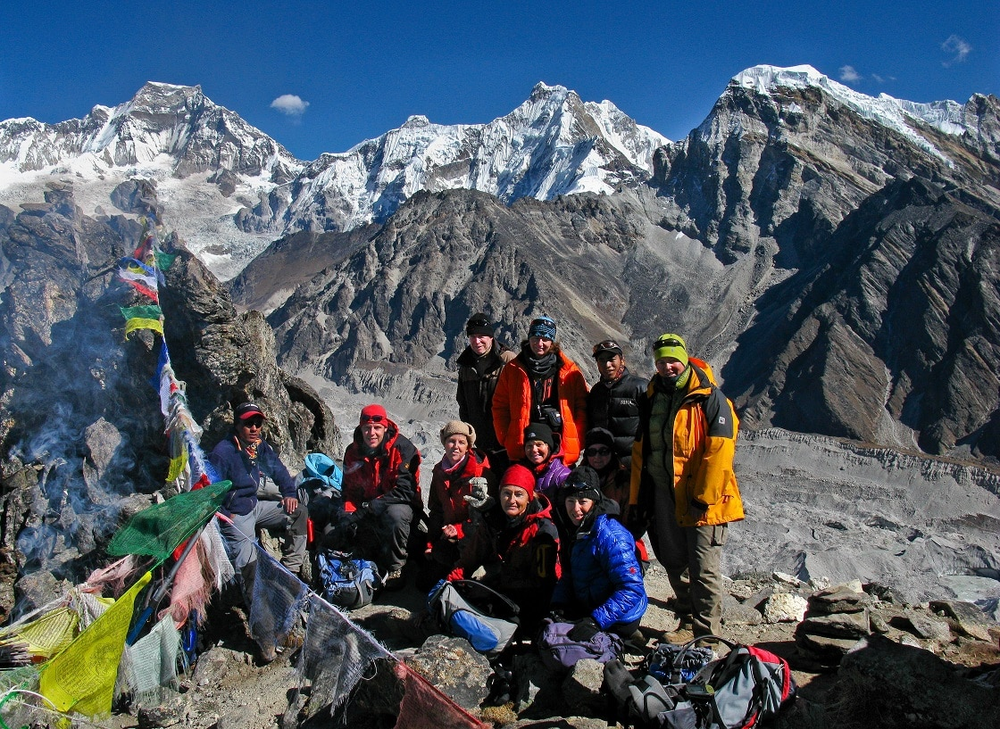

Hiking | Gokyo Trail
 

OVERVIEW
This hike is suitable mainly for people who want to avoid the crowd but still want to taste the splendor of the Everest region. Generally, the Everest region is busy with hikers worldwide, but some specific trails don’t invite crowd as regular EBC trail does. Fitting perfect for lone travelers, Everest Gokyo Lake is a beautiful hike.
The hiking route is less busy, but the mountain views are as remarkable as the Everest Base Camp trek. Accumulating every appealing aspect for travelers who love fewer crowds, this trek is undoubtedly one of the best hikes in Nepal. In the first few days, the walk follows the same path as EBC but takes a different route from Sanasa.
These hiking routes hikes through the forested path, cross yak grazing pasture lands and enter the realm of moraine and ice circles by looming peaks. Since the trek gets the fewer crowd, the chance of meeting genuinely friendly locals is pretty high. Overall, this beautiful hike in Khumbu valley is the best hike for its unspoiled cultural heritage and outstanding mountain scenery.
The Everest Gokyo Lake Trek is one of the most beautiful journeys in Nepal. It takes place in the Khumbu region. In the first place, you can enjoy the beauty of the Himalayas. In the second, you can also enjoy the holy lakes of Gokyo. Not only is the trip unforgettable, but it is also very rich in culture. Together with the natural beauty, you can enjoy the Sherpa culture. Khumbu is a prime Sherpa settlement. In contrast to the regular Everest Base Camp Trek, the Everest Gokyo Lake Trek is even more beautiful!
Furthermore, you can revel in the beautiful river valleys of the region. In addition, you will visit the beautiful Gokyo Lake. Hindu people hold the Gokyo Lake in high religious regard. In like manner, Hindu people believe that the Gokyo Lake is the abode of the Snake Gods- the Nagas. Identically, the Everest Gokyo Lake Trek is a perfect alternative for trekking in Khumbu.
The Everest Gokyo Lake Trek incorporates the best features of the Khumbu. It begins with a beautiful short flight to Lukla. Similarly, you will visit famous Khumbu villages and settlements. The trekking trail goes through Namche Bazaar, Dole, and Machhermo, among others. All of the destinations are accompanied by majestic views of the Everest Himalayas. You can see beautiful mountain peaks like Cho Oyu, Makalu, Everest, Lhotse, and many more. The Everest Gokyo Lake Trek avoids the regular trekking trail. Correspondingly, it alternates between taking you through a less-traveled route. You can experience the Sherpa culture all along the journey. Mani stone walls and small chortens with prayer flags are constantly present along the journey. Moreover, you will also visit the Gokyo RI. It is particularly famous for being a natural vantage point besides Kalapatthar. You can see amazing panoramic views of the Everest massif from Gokyo, RI. The best time to do the Everest Gokyo Lake Trek is in spring and autumn. March to May and September to December are the best months to make the trip.